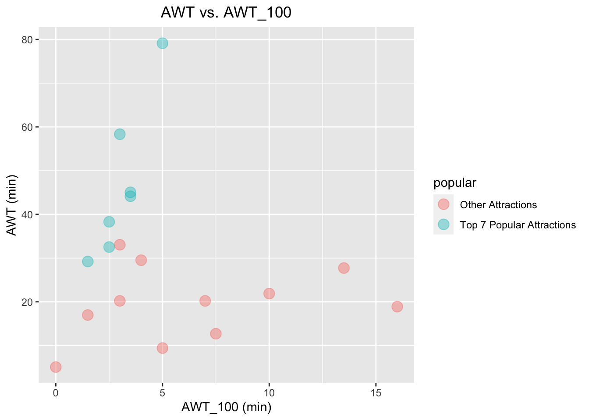
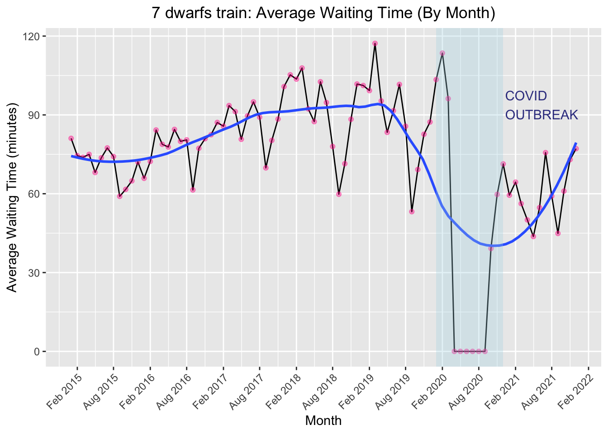

Chapter 4 Results
×
4.1 Assumption
As introduced in the data cleaning section, our exploratory analysis is heavily based on the waiting_time statistics of attractions in the Walt Disneyland collected from thrid-party organization. Therefore, it is extremely crucial to examine the validity and reliability of the assumptions that our analysis will rely on and think about any inductive biases that we implicitly impose in the analysis. Specifically, there are two important aspects that we want to research on:
- Assumption 1: the dataset is valid and reliable (i.e. no internal conflicts)
- Assumption 2: waiting time statistic is a representative metric for analysis
4.1.1 Assumption 1
Unlike most other groups whose datasets come from official sources including government websites and database where verifications are conducted, the dataset we used is collected from a thrid party organization Touringplans.com. Therefore, validation of dataset is necessary and important. We performed our validation by identifying internal conflicts of datasets and compare our preliminary analysis with reports from the official (i.e. Disneyland).
The first simple task we tried to validiate our dataset is to predict top seven attractions according to their popularity. In our dataset, we computed the average waiting time for each attraction (denoted by AWT in the plot) and made usage of the average_wait_every_hundred statistic (i.e. denoted by AWT_100 in the plot) to do the prediction. Note that AWT_100 represents the average waiting time for every hundred people. Therefore, attractions that are popular should be those with high AWT but low AWT_100.

According to this reasoning, we identified that the top 7 most popular attractions from the scatter plot above: Seven Dwarfs Mine Train, Space Mountain, Jungle Cruise, Splash Mountain , Big Thunder Mountain Railroad, Pirates of Caribbean, and Haunted Mansions. Based on the report of most popular attractions by magicguides.com and the introduction from Disneyland Officials the most popular 7 attractions are: Big Thunder Mountain Railroad, Jungle Cruise , Splash Mountain, Peter Pan’s Flight, Haunted Mansions, Pirates of Caribbean, and Seven Dwarfs Mine Train. Our prediction results matched with most of their analysis (6/7), and we can improve our confidence about the reliability of the source data from this small prediction task. In addition, there is no internal conflict in our dataset because they are all time series data for different attractions.
4.1.2 Assumption 2
By calculating and plotting the waiting time for each attraction, we identified that average waiting time itself is not a good indicator for popularity of the attraction. Note that we observe that the average waiting time is not always higher for popular attractions identified in previous section. Thus, we should not solely leverage on that when analyzing the popularity of attractions. However, with the power of time series data, it is powerful when analyzing trend and designing visiting plans.
4.2 General Pattern Analysis - Macro-Level
With confidence of dataset validity, we first analyze the pattern of waiting time of each attraction spanning from 2015-01-01 to 2022-01-01, by which we can identify the peak season of Walt Disneyland. Note that for this section, we are doing macro-scale analysis, implying we will focus on the average waiting time for each month for each attraction.
4.2.1 Secular Trends
To identify secular trend, we computed the average waiting time for each month for all attractions and then made the following time series plot. Here is the main observations:
- Obs #1: From 2015 to 2019, there is a general trend of increasing waiting time.
Exp: as Disneyland became more famous, there are more tourists but the attractions remain unchanged, which result in an increasing of waiting time. - Obs #2: From about 2019 to 2020, there is a huge decreasing in terms of waiting time.
Exp: this corresponds to the outbreak of COVID-19 in the United States, which result in the temporary close of Disneyland and the huge decreasing of number of tourists even after reopening. - Obs #3: Starting from 2020, there is a general trend of increasing waiting time
Exp: this corresponds to the fact that people are back to normal life from COVID disruption. - Obs #4: There is an obvious abnormality in the plot (2020-04-01 to 2020-10-01), where the waiting times are all zeros, which correpond to the closure of Disneyland. (Note that there is a design choice for plotting; see Data Cleaning section for details)
Note: According to Disneyland’s Officials, Disneyland was closed during COVID-19 outbreaks 
Below are the time series plot for the average waiting time changing pattern for each attraction in Disneyland. Click on the plots to zoom in. Through this juxtaposition, we can easily observed that the four trends and abnormalites that we identified eariler is universal across all attractions, and we do not subject to Simpson’s Paradox.


4.2.2 Identify cyclical patterns
Time series data commonly share some underlying cyclical patterns. We utilized faceting techniques to isolate average waiting time for each year and identify the following trends and patterns: (Explanations are based on news, activities, and reports published by Disneyland Officials)
- Obs #1: We managed to identify cyclical patterns by isolating AWT for each year.
- Obs #2: In general, there are two peaks of AWT for attractions in Disneyland: April - July (spring peak) and December - January (winter peak).
Exp: Spring AWT peak corresponds to the fact that there are tons of activities held in that period, whereas winter peak is the direct result of Christmas Holiday (Note that Florida is a good place to stay for many people during winter). - Obs #3: In 2020, we observed a completely different trend due to the temporary closure of the park.
- Obs #4: In 2021, the general AWT decreases but the peaks are still around spring and winter.
Exp: the decreasing waiting time (compared to 2015 to 2019) accounts for the influence of COVID-19 to people’s life, while the consistency of peak seasons confirmed the validity of previously-observed trends.
Similarly, we can plot the AWT for each attraction as what we did for the previous section to further confirm the global trends. Click on the plots below to zoom in. Here are the main takeaway from these plots:
- Obs #1: Most of the attractions share the similar patterns as identified before.
- Obs #2: For attractions whose data are not sufficiently large (refer to Data Cleaning section for details), spring and winter peaks are observed as well.
- Obs #3: Combined previous two observations, we can safely conclude that we do not suffer from Simpson’s Paradox and the trend is valid.
- Obs #4: From this juxtapositin, we can easily discover features about each attraction. For example, we can quickly guess that Hall of Presidents was closed in 2017 (annoucement from Disneyland Officials confirmed our conjecture).



## X name duration
## 1 0 7 dwarfs train 3.0
## 2 1 pirates of caribbean 7.5
## 3 2 astro orbiter 1.5
## 4 3 regal carrousel 2.0
## 5 4 big thunder mtn 7.0
## 6 5 splash mountain 18.0
## 7 6 space mountain 10.0
## 8 7 jungle cruise 8.0
## 9 8 mad tea party 1.5
## 10 9 dumbo 1.5
## 11 10 magic carpets 1.5
## 12 11 peoplemover 10.0
## 13 12 under the sea 7.0
## 14 13 barnstormer 2.0
## 15 14 winnie the pooh 4.0
## 16 15 enchanted tiki rm 14.5
## 17 16 haunted mansion 10.0
## 18 17 buzz lightyear 4.54.2.3 Section Conclusion
A main takeaway of this macro-level analysis for tourists is that spring and winter are two peak seasons that the AWT is higher than that of other time; this trend is exhibited both before and after COVID-19, and will be consistent in the future. Therefore, one natural suggestion is to visit the park in summer or fall.